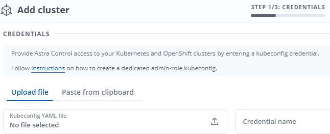
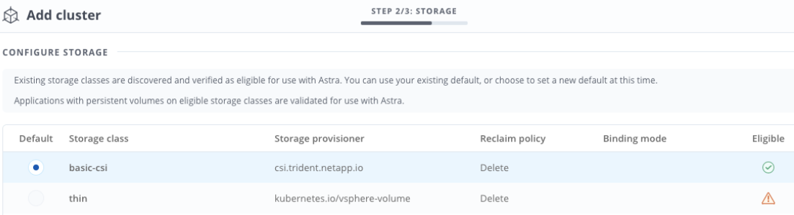

Request doc changes
Request doc changes Edit this page
Edit this page Learn how to contribute
Learn how to contributeSet up Astra Control Center
Contributors
Astra Control Center supports and monitors ONTAP and Astra Data Store as the storage backend. After you install Astra Control Center, log in to the UI, and change your password, you’ll want to set up a license, add clusters, manage storage, and add buckets.
Add a license for Astra Control Center
You can add a new license using the UI or API to gain full Astra Control Center functionality. Without a license, your usage of Astra Control Center is limited to managing users and adding new clusters.
For more information on how licenses are calculated, see Licensing.

|
To update an existing evaluation or full license, see Update an existing license. |
Astra Control Center licenses measure CPU resources using Kubernetes CPU units. The license needs to account for the CPU resources assigned to the worker nodes of all the managed Kubernetes clusters. Before you add a license, you need to obtain the license file (NLF) from the NetApp Support Site.
You can also try Astra Control Center with an evaluation license, which lets you use Astra Control Center for 90 days from the date you download the license. You can sign up for a free trial by registering here.
|
|
If your installation grows to exceed the licensed number of CPU units, Astra Control Center prevents you from managing new applications. An alert is displayed when capacity is exceeded. |
When you downloaded Astra Control Center from the NetApp Support Site, you also downloaded the NetApp license file (NLF). Ensure you have access to this license file.
-
Log in to the Astra Control Center UI.
-
Select Account > License.
-
Select Add License.
-
Browse to the license file (NLF) that you downloaded.
-
Select Add License.
The Account > License page displays the license information, expiration date, license serial number, account ID, and CPU units used.
|
|
If you have an evaluation license, be sure you store your account ID to avoid data loss in the event of Astra Control Center failure if you are not sending ASUPs. |
Add cluster
To begin managing your apps, add a Kubernetes cluster and manage it as a compute resource. You have to add a cluster for Astra Control Center to discover your Kubernetes applications. For Astra Data Store, you want to add the Kubernetes app cluster that contains applications that are using volumes provisioned by Astra Data Store.

|
We recommend that Astra Control Center manage the cluster it is deployed on first before you add other clusters to Astra Control Center to manage. Having the initial cluster under management is necessary to send Kubemetrics data and cluster-associated data for metrics and troubleshooting. You can use the Add Cluster feature to manage a cluster with Astra Control Center. |
|
|
When Astra Control manages a cluster, it keeps track of the cluster’s default storage class. If you change the storage class using
|
-
Before you add a cluster, review and perform the necessary prerequisite tasks.
-
From the Dashboard in the Astra Control Center UI, select Add in the Clusters section.
-
In the Add Cluster window that opens, upload a
kubeconfig.yamlfile or paste the contents of akubeconfig.yamlfile.
The kubeconfig.yamlfile should include only the cluster credential for one cluster.

If you create your own kubeconfigfile, you should define only one context element in it. See Kubernetes documentation for information about creatingkubeconfigfiles. -
Provide a credential name. By default, the credential name is auto-populated as the name of the cluster.
-
Select Configure storage.
-
Select the storage class to be used for this Kubernetes cluster, and select Review.
You should select a Trident storage class backed by ONTAP storage or Astra Data Store. 
-
Review the information, and if everything looks good, select Add cluster.
The cluster enters the Discovering status and then changes to Running. You have successfully added a Kubernetes cluster and are now managing it in Astra Control Center.
|
|
After you add a cluster to be managed in Astra Control Center, it might take a few minutes to deploy the monitoring operator. Until then, the Notification icon turns red and logs a Monitoring Agent Status Check Failed event. You can ignore this, because the issue resolves when Astra Control Center obtains the correct status. If the issue does not resolve in a few minutes, go to the cluster, and run oc get pods -n netapp-monitoring as the starting point. You will need to look into the monitoring operator logs to debug the problem.
|
Add a storage backend
You can add a storage backend so that Astra Control can manage its resources. You can deploy a storage backend on a managed cluster or use an existing storage backend.
Managing storage clusters in Astra Control as a storage backend enables you to get linkages between persistent volumes (PVs) and the storage backend as well as additional storage metrics.
-
You have added your Kubernetes app cluster and the underlying compute cluster.
After you add your Kubernetes app cluster for Astra Data Store and it is managed by Astra Control, the cluster appears as unmanagedin the list of discovered backends. You must next add the compute cluster that contains Astra Data Store and underlies the Kubernetes app cluster. You can do this from Backends in the UI. Select the Actions menu for the cluster, selectManage, and add the cluster. After the cluster state ofunmanagedchanges to the name of the Kubernetes cluster, you can proceed with adding a backend.
-
You have uploaded the version of the installation bundle you intend to deploy to a location that is accessible to Astra Control.
-
You have added the Kubernetes cluster that you intend to use for deployment.
-
You have uploaded the Astra Data Store license for your deployment to a location that is accessible to Astra Control.
Deploy storage resources
You can deploy a new Astra Data Store and manage the associated storage backend.
-
Navigate from the Dashboard or the Backends menu:
-
From Dashboard: From the Resource Summary, select a link from the Storage Backends pane and select Add from the Backends section.
-
From Backends:
-
In the left navigation area, select Backends.
-
Select Add.
-
-
-
Select the Astra Data Store deployment option within the Deploy tab.
-
Select the Astra Data Store package to deploy:
-
Enter a name for the Astra Data Store application.
-
Choose the version of Astra Data Store you want to deploy.
If you have not yet uploaded the version you intend to deploy, you can use the Add package option or exit the wizard and use package management to upload the installation bundle.
-
-
Select an Astra Data Store license that you have previously uploaded or use the Add license option to upload a license to use with the application.
Astra Data Store licenses with full permissions are associated with your Kubernetes cluster, and these associated clusters should appear automatically. If there is no managed cluster, you can select the Add a Cluster option to add one to Astra Control management.
For Astra Data Store licenses, if no association has been made between the license and cluster, you can define this association on the next page of the wizard. -
If you have not added a Kubernetes cluster to Astra Control management, you need to do so from the Kubernetes cluster page. Select an existing cluster from the list or select add the underlying cluster to add a cluster to Astra Control management.
-
Select a template size for the Kubernetes cluster that will provide resources for Astra Data Store. You can choose one of the following:
-
If you choose
Recommended Kubernetes worker node requirements, select a template from large to small based on what your license allows. -
If you choose
Custom Kubernetes worker node requirements, select the number of cores and total memory you want for each cluster node. You can also show the eligible number of nodes in the cluster that meet your selection criteria for cores and memory.
When picking a template, select larger nodes with more memory and cores for larger workloads or a greater number of nodes for smaller workloads. You should select a template based on what your license allows. Each recommended template option suggests the number of eligible nodes that satisfy the template pattern for memory and cores and capacity for each node.
-
-
Configure the nodes:
-
Add a node label to identify the pool of worker nodes that supports this Astra Data Store cluster.
The label must be added to each individual node in the cluster that will be used for Astra Data Store deployment prior to the start of deployment or deployment will fail. -
Configure the capacity (GiB) per node manually or select the maximum node capacity allowed.
-
Configure a maximum number of nodes allowed in the cluster or allow the maximum number of nodes on the cluster.
-
-
(Astra Data Store full licenses only) Enter the key of the label you want to use for Protection Domains.
Create at least three unique labels for the key for each node. For example, if your key is astra.datastore.protection.domain, you might create the following labels:astra.datastore.protection.domain=domain1,astra.datastore.protection.domain=domain2, andastra.datastore.protection.domain=domain3. -
Configure the management network:
-
Enter a management IP address for Astra Data Store internal management that is on the same subnet as worker node IP addresses.
-
Choose to use the same NIC for both management and data networks or configure them separately.
-
Enter data network IP address pool, subnet mask and gateway for storage access.
-
-
Review the configuration and select Deploy to begin installation.
After a successful installation, the backend appears in available state in the backends list along with active performance information.
|
|
You might need to refresh the page for the backend to appear. |
Use an existing storage backend
You can bring a discovered ONTAP or Astra Data Store storage backend into Astra Control Center management.
-
Navigate from the Dashboard or the Backends menu:
-
From Dashboard: From the Resource Summary, select a link from the Storage Backends pane and select Add from the Backends section.
-
From Backends:
-
In the left navigation area, select Backends.
-
Select Manage on a discovered backend from the managed cluster or select Add to manage an additional existing backend.
-
-
-
Select the Use existing tab.
-
Do one of the following depending on your backend type:
-
Astra Data Store:
-
Select Astra Data Store.
-
Select the managed compute cluster and select Next.
-
Confirm the backend details and select Add storage backend.
-
-
ONTAP:
-
Select ONTAP and select Next.
-
Enter the ONTAP cluster management IP address and admin credentials.
The user whose credentials you enter here must have the ontapiuser login access method enabled within ONTAP System Manager on the ONTAP cluster. If you plan to use SnapMirror replication, enable the access methodsontapiandhttpfor the user on both ONTAP clusters. See Manage User Accounts for more information. -
Select Review.
-
Confirm the backend details and select Add storage backend.
-
-
The backend appears in available state in the list with summary information.
|
|
You might need to refresh the page for the backend to appear. |
Add a bucket
Adding object store bucket providers is essential if you want to back up your applications and persistent storage or if you want to clone applications across clusters. Astra Control stores those backups or clones in the object store buckets that you define.
When you add a bucket, Astra Control marks one bucket as the default bucket indicator. The first bucket that you create becomes the default bucket.
You don’t need a bucket if you are cloning your application configuration and persistent storage to the same cluster.
Use any of the following bucket types:
-
NetApp ONTAP S3
-
NetApp StorageGRID S3
-
Generic S3
-
Microsoft Azure
|
|
Although Astra Control Center supports Amazon S3 as a Generic S3 bucket provider, Astra Control Center might not support all object store vendors that claim Amazon’s S3 support. |
For instructions on how to add buckets using the Astra Control API, see Astra Automation and API information.
-
In the left navigation area, select Buckets.
-
Select Add.
-
Select the bucket type.
When you add a bucket, select the correct bucket provider and provide the right credentials for that provider. For example, the UI accepts NetApp ONTAP S3 as the type and accepts StorageGRID credentials; however, this will cause all future app backups and restores using this bucket to fail. -
Create a new bucket name or enter an existing bucket name and optional description.
The bucket name and description appear as a backup location that you can choose later when you’re creating a backup. The name also appears during protection policy configuration. -
Enter the name or IP address of the S3 endpoint.
-
If you want this bucket to be the default bucket for all backups, check the
Make this bucket the default bucket for this private cloudoption.
This option does not appear for the first bucket you create. -
Continue by adding credential information.
-
Add S3 access credentials
Add S3 access credentials at any time.
-
From the Buckets dialog, select either the Add or Use existing tab.
-
Enter a name for the credential that distinguishes it from other credentials in Astra Control.
-
Enter the access ID and secret key by pasting the contents from your clipboard.
-
Change the default storage class
You can change the default storage class for a cluster.
-
In the Astra Control Center web UI, select Clusters.
-
On the Clusters page, select the cluster that you want to change.
-
Select the Storage tab.
-
Select the Storage classes category.
-
Select the Actions menu for the storage class that you want to set as default.
-
Select Set as default.
What’s next?
Now that you’ve logged in and added clusters to Astra Control Center, you’re ready to start using Astra Control Center’s application data management features.